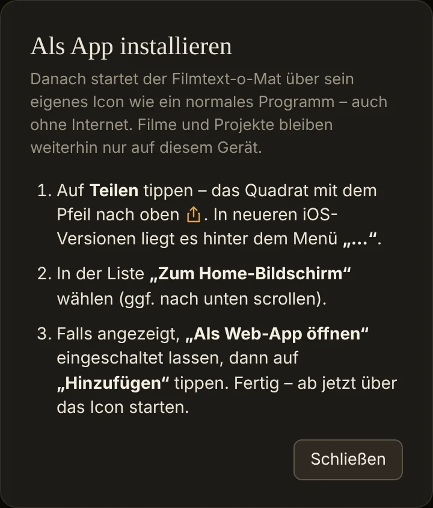
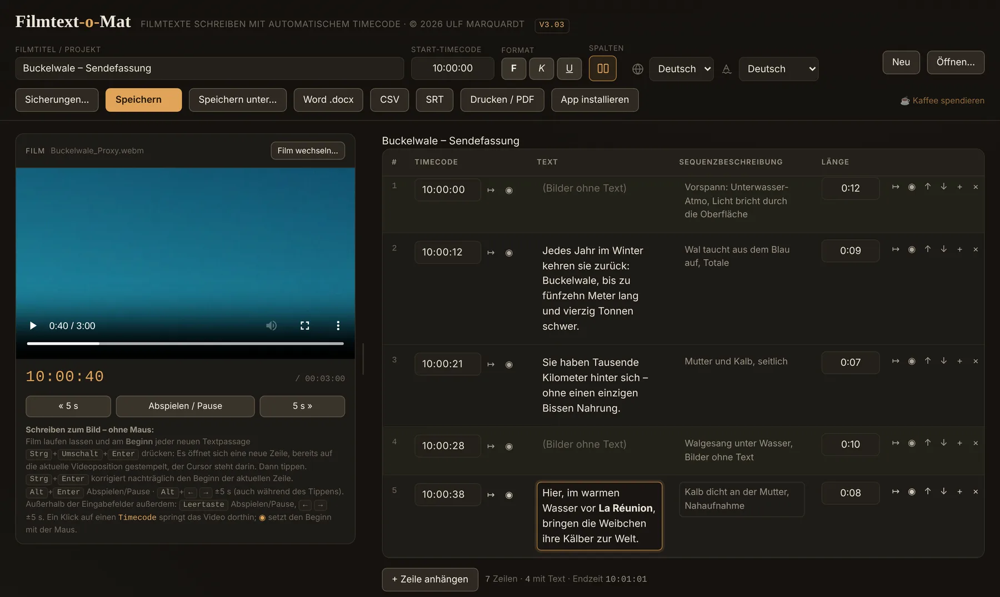
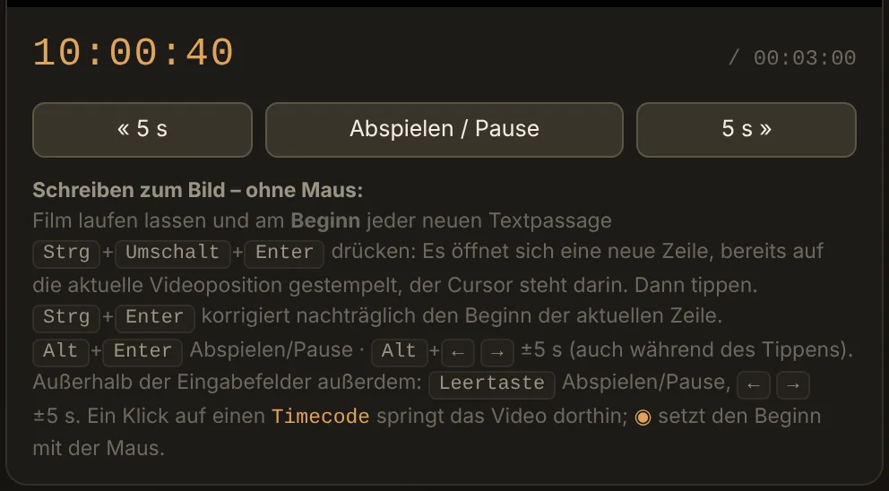
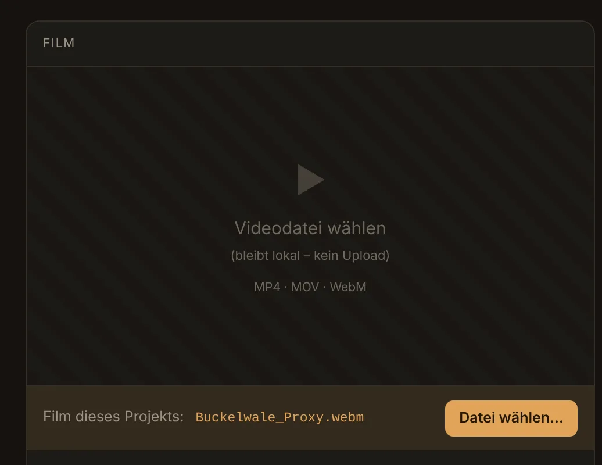
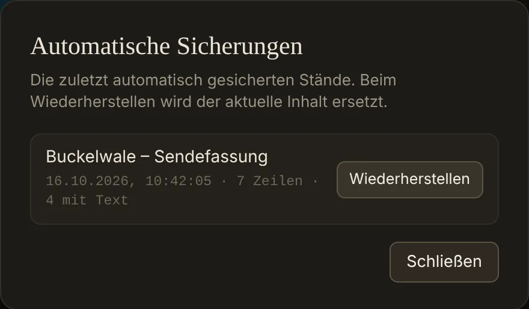

Was das Programm macht. Der Filmtext-o-Mat ist ein Werkzeug zum Schreiben von Filmtexten und Sprechermanuskripten. Jede Zeile hat einen Beginn-Timecode, den Sprechertext, eine Beschreibung der Sequenz und eine Länge. Das Besondere: Du gibst die Längen der Sequenzen ein – die Timecodes berechnet das Programm selbst. Fügst du etwas ein oder kürzt du, verschieben sich alle folgenden Timecodes automatisch. Mit geladenem Film geht es noch schneller: Ein Tastendruck setzt den Beginn einer Passage genau auf die Stelle, die gerade im Bild ist.
Deine Daten bleiben bei dir. Der Filmtext-o-Mat läuft komplett in deinem Browser. Filme und Manuskripte werden nirgendwohin hochgeladen – aus dem Internet kommt nur das Programm selbst.
1. Installation und Starten
Der Filmtext-o-Mat ist eine Web-App. Du brauchst nichts herunterzuladen und nichts einzurichten: Ein Link genügt, und das Programm läuft auf Windows, Mac, iPad, iPhone und Android.
Starten über den Link
Öffne den Filmtext-o-Mat über den Button „Filmtext-o-Mat starten“ auf ulf-marquardt.de. Lege dir am besten ein Lesezeichen an. Empfohlen sind Chrome oder Edge: Nur dort gibt es den echten Speichern-Dialog und das automatische Wiederfinden des Films (Kapitel 6 und 8). Safari und Firefox funktionieren ebenfalls, mit kleinen Einschränkungen, die an der jeweiligen Stelle erklärt sind.
Als App installieren
Installiert startet der Filmtext-o-Mat wie ein normales Programm: mit eigenem Icon, im eigenen Fenster, ohne Adressleiste – und auch ohne Internet. Dafür gibt es in der Werkzeugleiste den Button App installieren. In der bereits installierten App ist er ausgeblendet. Die aktuelle Versionsnummer steht oben neben dem Namen.
- Windows, Mac und Android mit Chrome oder Edge: Auf App installieren klicken und im Dialog des Browsers bestätigen. Ist der Dialog noch nicht bereit – Chrome und Edge bieten ihn erst an, wenn die Seite kurz benutzt wurde –, zeigt der Button stattdessen, wo die Installation im Browser zu finden ist: über das Installations-Symbol in der Adressleiste oder das Browser-Menü.
- iPhone und iPad: Hier gibt es keinen Installationsdialog. Der Button zeigt deshalb eine kurze Anleitung: Auf Teilen tippen (das Quadrat mit dem Pfeil nach oben; in neueren iOS-Versionen hinter dem Menü „…“), dann „Zum Home-Bildschirm“ wählen und mit „Hinzufügen“ bestätigen.
- Safari auf dem Mac (ab macOS 14): Im Menü Ablage den Punkt „Zum Dock hinzufügen …“ wählen.
- Firefox am Computer kann Web-Apps nicht installieren. Der Filmtext-o-Mat läuft dort ganz normal im Browser-Tab; der Button erklärt das.

Offline arbeiten und Updates
Nach dem ersten Start über das Internet funktioniert der Filmtext-o-Mat auch offline – am Drehort, im Zug, im Schneideraum ohne Netz. Ist eine Verbindung da, holt er sich beim Start automatisch die neueste Version. Du musst dich also nie um Updates kümmern.
Sprache der Oberfläche und Sprache des Textes
In der Werkzeugleiste gibt es zwei Auswahlfelder, die mit Symbolen statt Wörtern beschriftet sind, damit man sie in jeder Sprache wiederfindet:
- Globus – Sprache der Oberfläche: Deutsch oder Englisch. Gilt für dieses Gerät und bleibt gespeichert.
- Schrift-Symbol – Sprache des Sprechertextes: Deutsch, Englisch, Französisch, Niederländisch, Spanisch oder Italienisch. Danach richten sich die Rechtschreibprüfung des Browsers und die Spaltenüberschriften der Exporte. Diese Einstellung gehört zum Projekt und wird mit ihm gespeichert – ein englisches Manuskript lässt sich also auch mit deutscher Oberfläche schreiben.
2. Die Oberfläche im Überblick

Oben liegt die Werkzeugleiste mit Filmtitel, Start-Timecode, Formatierung, Spalten-Schalter, den beiden Sprachfeldern und den Knöpfen zum Speichern und Exportieren. Links ist der Filmbereich, rechts die Manuskript-Tabelle. Jede Tabellenzeile ist eine Sequenz. Unter der Tabelle stehen die Anzahl der Zeilen, wie viele davon Text enthalten, und die Endzeit. Auf schmalen Bildschirmen (zum Beispiel iPad hochkant) rückt der Film über die Tabelle.
Die vier Spalten
- Timecode – der Beginn der Zeile (hh:mm:ss). Wird berechnet, ist aber auch von Hand änderbar.
- Text – der Sprechertext. Leer lassen für reine Bild- oder Atmo-Sequenzen.
- Sequenzbeschreibung – was im Bild zu sehen ist, als Notiz für dich und die Redaktion.
- Länge – die Dauer der Sequenz. Eingabe als Sekunden (
8), als m:ss (1:30) oder als h:mm:ss.
Sequenzbeschreibung ausblenden. Beim Texten zum Bild braucht man vor allem Platz für den Sprechertext. Der Schalter unter Spalten (oder Alt + Umschalt + D) blendet die Beschreibung aus und wieder ein. Es geht dabei nichts verloren: Die Beschreibungen bleiben im Projekt und in den Exporten.
3. Das Grundprinzip: Längen statt Timecodes
Damit sich beim Einfügen oder Kürzen alles automatisch verschiebt, rechnet das Programm so: Der Timecode einer Zeile ist der Start-Timecode plus alle Längen der Zeilen darüber. Du pflegst also normalerweise die Längen, und die Timecodes ergeben sich von selbst.
Beispiel: Du fügst bei 3:20 eine Sequenz von 8 Sekunden ein – alle folgenden Zeilen rücken automatisch um 8 Sekunden nach hinten. Kürzt du eine Länge, rücken sie entsprechend vor. Unten in der Tabelle werden Ende und Gesamtlänge laufend mitgerechnet.
Start-Timecode. Im Feld oben steht der Timecode des ersten Filmbildes. Standard ist 00:00:00; viele Sendeanstalten beginnen bei 10:00:00. Alle Timecodes der Tabelle und die Uhr unter dem Film richten sich danach.
Sequenzen ohne Text (Vorspann, Atmo, reine Bilder) bekommen einfach eine eigene Zeile mit Länge und Beschreibung, aber ohne Text. So bleibt die Zeitachse lückenlos.
Die Zeitauflösung ist sekundengenau. Für Sprechertexte ist das genau richtig; framegenaue Arbeit gehört in den Schnitt oder einen Untertitel-Editor.
4. Mit Zeilen arbeiten
Jede Zeile trägt kleine Knöpfe – direkt neben dem Timecode und noch einmal rechts in der Zeile, damit der Weg mit der Maus immer kurz ist:
- ↦ springt mit dem Film an den Beginn dieser Zeile.
- ◉ setzt den Beginn dieser Zeile auf die aktuelle Filmposition (Kapitel 6).
- ↑ / ↓ verschiebt die Zeile nach oben oder unten.
- + fügt darunter eine neue Zeile ein.
- × löscht die Zeile.
+ Zeile anhängen unter der Tabelle hängt eine Zeile am Ende an. Ist ein Film geladen, beginnt sie gleich an der aktuellen Filmposition. Die Textfelder wachsen beim Schreiben automatisch mit.
Formatieren. Text markieren und F, K oder U in der Werkzeugleiste anklicken – oder Strg + B, I, U. Fett, kursiv und unterstrichen werden in den Word-Export und in den Ausdruck übernommen, zum Beispiel für Betonungen beim Sprecher.
Aktive Zeile ist die Zeile, in deren Text- oder Beschreibungsfeld du zuletzt geklickt hast. Auf sie beziehen sich die Tastenkürzel.
5. Timecodes von Hand eingeben
Du kannst auch ohne fertigen Film arbeiten und Timecodes direkt eintippen. Klicke in das Timecode-Feld einer Zeile und gib den gewünschten Beginn ein, zum Beispiel 10:03:20. Die Zeile beginnt dann genau dort; dafür passt sich die Länge der Zeile darüber an, und alles Folgende rückt mit. Ein Wert, der vor der vorherigen Zeile läge, wird abgewiesen, damit die Reihenfolge stimmig bleibt.
Vorlauf. Beginnt die erste Zeile später als das erste Filmbild – etwa weil der Film mit einem Schwarzbild oder Logo startet –, trägst du ihren Timecode einfach ein. Der Abstand erscheint dann als kleines Kästchen neben dem Start-Timecode, zum Beispiel +00:00:04. Ein Klick darauf entfernt den Vorlauf wieder.
Typischer Ablauf: erst mit getippten Timecodes texten, später den fertigen Film laden und im selben Projekt weiterarbeiten.
6. Mit dem Film arbeiten
Film laden
Klicke links auf Videodatei wählen oder ziehe die Datei einfach auf diese Fläche. Der Film bleibt auf deinem Gerät und wird nicht hochgeladen. Auch große Dateien sind kein Problem, weil der Browser sie nur liest.
Format. Browser spielen zuverlässig MP4 (H.264) und WebM ab – nicht ProRes, MXF, AVI, AVCHD und meist auch nicht H.265/HEVC. Kann eine Datei nicht abgespielt werden, erscheint ein Hinweis. Erzeuge dann aus dem Master eine kleine Vorschaudatei (Proxy) in MP4, mit gleicher Länge und Bildrate, damit die Timecodes deckungsgleich bleiben – zum Beispiel mit HandBrake (Bildrate auf „Same as source“) oder FFmpeg.

Die große Uhr unter dem Film zeigt den Timecode der aktuellen Stelle – also Start-Timecode plus Position im Film –, damit du ihn direkt mit der Tabelle vergleichen kannst. Rechts daneben steht die Gesamtdauer der Datei. Die Knöpfe « 5 s, Abspielen / Pause und 5 s » steuern den Film.
Größe des Filmbereichs. Ziehe die senkrechte Trennlinie zwischen Film und Tabelle nach links oder rechts. Ein Doppelklick auf die Trennlinie stellt die Standardbreite wieder her. Für die große Ansicht gibt es außerdem den Vollbild-Knopf des Players.
Texten zum Bild
So arbeitest du dich ohne Maus Block für Block durch den Film:
- Film abspielen (Alt + Enter).
- Am Beginn einer neuen Textpassage Strg + Umschalt + Enter drücken. Am Ende des Manuskripts entsteht so eine neue Zeile, die bereits auf die aktuelle Filmposition gestempelt ist; der Cursor steht darin.
- Text tippen. Der Film kann dabei weiterlaufen.
- Liegt der Beginn nicht ganz richtig, den Film an die passende Stelle bringen (Alt + ← / →) und mit Strg + Enter den Beginn der aktiven Zeile korrigieren. Mit der Maus geht dasselbe über ◉.
Beim Stempeln wird jeweils die Länge der Zeile darüber gesetzt. Die Länge der letzten Zeile trägst du deshalb am Ende selbst ein – oder du hängst eine kurze Schluss-Sequenz an und stempelst deren Beginn.
Strg + Umschalt + Enter mitten im Manuskript fügt die neue Zeile unter der aktiven ein, stempelt sie aber nicht. Sonst würde sich unbemerkt alles Folgende verschieben.
Film wechseln
Kommt ein neuer Schnitt oder ein neu gerechneter Proxy, klicke oben im Filmbereich auf Film wechseln…. Der Film wird ausgetauscht, das Manuskript bleibt unverändert, und der Player bleibt an derselben Stelle stehen. Ist die neue Fassung kürzer, beginnt sie bei 0. Hat sie einen anderen Vorlauf, korrigierst du nur den Start-Timecode.
Das Projekt merkt sich seinen Film
Beim Speichern wird der Name der Filmdatei im Projekt vermerkt – der Film selbst wird nicht kopiert. Öffnest du das Projekt wieder, holt Chrome oder Edge den Film nach Möglichkeit von selbst zurück. Nach einem Neustart des Browsers fragt er höchstens einmal nach: Ein Klick auf ▶ Film anzeigen genügt, ganz ohne Suchen. Andere Browser zeigen zumindest an, welche Datei zum Projekt gehört; ein Klick auf Datei wählen… öffnet die Auswahl.

7. Tastenkürzel
| Taste | Funktion |
|---|---|
| Strg + Enter | Beginn der aktiven Zeile = aktuelle Filmposition (auch beim Tippen) |
| Strg + Umschalt + Enter | Neue Zeile unter der aktiven einfügen und hineinspringen; am Ende des Manuskripts gleich gestempelt |
| Alt + Enter | Film abspielen / anhalten (auch beim Tippen) |
| Alt + ← / → | 5 Sekunden zurück / vor (auch beim Tippen) |
| Alt + Umschalt + D | Sequenzbeschreibung aus- / einblenden |
| Strg + B / I / U | Markierten Text fett / kursiv / unterstrichen |
| Leertaste | Film abspielen / anhalten (außerhalb der Eingabefelder) |
| ← / → | 5 Sekunden zurück / vor (außerhalb der Eingabefelder) |
| Enter | Im Timecode- oder Längenfeld: Eingabe bestätigen |
| Esc | Offenen Dialog schließen |
Am Mac funktioniert statt Strg auch ⌘; Alt ist die Taste ⌥ (Option).
8. Speichern, Öffnen und Sicherungen
- Speichern legt deine Arbeit als Projektdatei (
.json) ab. Sie enthält alles: Titel, Start-Timecode, alle Zeilen mit Formatierung, die Textsprache und den Namen des Films. Der Punkt am Speichern-Knopf zeigt ungesicherte Änderungen an. - Speichern unter… speichert unter neuem Namen oder an einem anderen Ort.
- Öffnen… lädt eine gespeicherte Projektdatei.
- Neu beginnt ein leeres Manuskript – mit Rückfrage, falls noch etwas ungesichert ist.
Wo die Datei landet. In Chrome und Edge am Computer öffnet sich ein echter Speichern-Dialog, in dem du Ordner und Namen frei wählst; jedes weitere „Speichern“ aktualisiert dieselbe Datei. In Firefox und Safari sowie auf Android landet die Datei im Download-Ordner. Auf iPhone und iPad öffnet sich das Teilen-Menü: „In Dateien sichern“ wählen. Der vorgeschlagene Dateiname richtet sich nach dem Filmtitel.
Automatische Sicherungen
Während du arbeitest, sichert der Filmtext-o-Mat deinen Stand automatisch im Browser – zwei Sekunden nach jeder Änderung und zusätzlich alle 30 Sekunden. Unten erscheint dann „Automatisch gesichert“ mit Uhrzeit. Aufbewahrt werden die fünf letzten Stände; ein neuer Stand beginnt höchstens alle zwei Minuten.
Wurde der Tab versehentlich geschlossen oder ist der Rechner abgestürzt, bietet das Programm beim nächsten Start die Sicherungen zur Wiederherstellung an. Jederzeit erreichbar sind sie über Sicherungen…. Schließt du einen Tab mit ungesicherten Änderungen, warnt der Browser vorher.

9. Exportieren
Word (.docx)
Der Knopf Word .docx öffnet die Spaltenauswahl mit drei Voreinstellungen:
- Für Sprecher – nur Timecode und Text; Zeilen ohne Text werden weggelassen.
- Für Redaktion und Alle Spalten – alle vier Spalten, alle Zeilen.
Zusätzlich lassen sich Spalten einzeln an- und abhaken, Zeilen ohne Text überspringen und die Gesamtlänge anhängen. Es entsteht ein aktuelles Word-Dokument im A4-Hochformat: Calibri 12 pt, anderthalbzeilig, mit Leerzeile nach jedem Absatz. Ein Textblock wird nie über eine Seite hinweg getrennt – der Sprecher muss also nie mitten in einer Passage umblättern. Fett, kursiv und unterstrichen bleiben erhalten.
CSV
Der Knopf CSV erzeugt eine Tabellendatei (Semikolon-getrennt, UTF-8) mit allen vier Spalten und der Gesamtlänge, die sich direkt in Excel oder Numbers öffnen lässt.
SRT (Untertitel)
Der Knopf SRT erzeugt eine Untertiteldatei. Jede Zeile mit Text wird zu einem Untertitel (Beginn = Timecode, Ende = Beginn + Länge); Zeilen ohne Text werden übersprungen. Längere Blöcke werden automatisch in Abschnitte von höchstens 5 Sekunden geteilt, der Text dabei an Wortgrenzen gleichmäßig verteilt. Die Zeiten zählen ab Filmbeginn (0), unabhängig vom Start-Timecode – so passt die Datei direkt zur Videodatei.
Die SRT ist eine gute Rohfassung. Für Sendeuntertitel schneidest du die Umbrüche danach in einem Untertitel-Editor fein, zum Beispiel in Aegisub oder im Untertitel-Werkzeug von DaVinci Resolve.
Drucken / PDF
Der Knopf Drucken / PDF öffnet den Druckdialog des Browsers; dort lässt sich auch „Als PDF speichern“ wählen. Der Ausdruck folgt dem Word-Export: gleiche Schriftgröße und Zeilenabstände, kein Block über einen Seitenumbruch, die Kopfzeile der Tabelle auf jeder Seite. Bedienelemente und Filmbereich werden ausgeblendet.
10. Fragen und Probleme
Auf dem iPad oder iPhone sehe ich nur eine leere Seite oder einen Hinweis.
Du hast den Filmtext-o-Mat wahrscheinlich als Datei aus Mail, Messenger oder der Dateien-App geöffnet. Diese Vorschauen führen keine Programme aus. Öffne ihn stattdessen über den Link auf ulf-marquardt.de – und installiere ihn am besten gleich auf dem Home-Bildschirm (Kapitel 1).
Der Film lässt sich nicht abspielen.
Das Format wird vom Browser nicht unterstützt. Erzeuge eine MP4-Vorschaudatei (H.264) mit gleicher Länge und Bildrate (Kapitel 6).
Nach dem Öffnen des Projekts fehlt der Film.
Klicke im Filmbereich auf ▶ Film anzeigen bzw. Datei wählen…. Wurde die Datei inzwischen verschoben oder umbenannt, wähle sie einmal neu aus und speichere das Projekt.
Ein Timecode wird nicht angenommen.
Ein Beginn darf nicht vor dem der vorherigen Zeile liegen, und die erste Zeile nicht vor dem Start-Timecode. Prüfe außerdem den Start-Timecode: Steht dort 10:00:00, beginnen auch alle Timecodes der Tabelle bei 10:00:00.
Meine automatischen Sicherungen sind weg.
Sie liegen nur im jeweiligen Browser auf dem jeweiligen Gerät. In einem anderen Browser, im privaten Modus oder nach dem Löschen der Browserdaten sind sie nicht zu sehen. Deshalb gilt: wichtige Stände immer als Datei speichern.
Wie bekomme ich die neueste Version?
Automatisch: Ist beim Start eine Internetverbindung da, lädt der Filmtext-o-Mat die neueste Version. Ohne Verbindung arbeitet er mit der zuletzt geladenen weiter.
Geht irgendetwas von meinen Daten ins Internet?
Nein. Filme, Manuskripte und Sicherungen bleiben auf deinem Gerät. Aus dem Internet wird nur das Programm geladen.
Unterstützung
Der Filmtext-o-Mat ist kostenlos. Wenn er dir die Arbeit erleichtert, freue ich mich über einen Kaffee: Der Link ☕ Kaffee spendieren steht rechts in der Werkzeugleiste. Anregungen und Fehlermeldungen sind ebenfalls willkommen.
Viel Erfolg beim Texten.